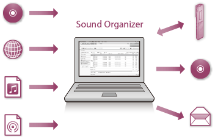

Sound Organizer的用途（仅限Windows）
您可以从Sony服务网站上下载Sound Organizer安装文件（SoundOrganizer_V1601.exe）。
Sound Organizer允许您与IC录音机交换文件。还可以播放从音乐CD或其他介质导入的歌曲，导入电脑上的MP3和其他音频文件以及播客，并将其传输到IC录音机上。可以对导入的文件执行各种操作，包括播放、编辑和转换成MP3及其他格式。还可以刻录成喜欢的音乐CD，并通过邮件发送音频文件。
有关Sound Organizer操作的详情，请参阅Sound Organizer帮助。

导入IC录音机录制的文件
您可以将IC录音机录制的录音文件导入到Sound Organizer。
导入的文件被保存到电脑上。
导入音乐CD上的歌曲
您可以将音乐CD上的歌曲导入到Sound Organizer。
导入的歌曲被保存到电脑上。
导入电脑上的歌曲
您可以将电脑上保存的音乐和其他文件导入到Sound Organizer。
订阅和更新播客
您可以在Sound Organizer中订阅播客。
通过订阅和更新播客，可以从网上下载（订阅）和享用最新的资料。
播放文件
您可以播放导入到Sound Organizer中的文件。
更改文件信息
可以更改文件列表中显示的标题名、艺术家名及其他文件信息。
分割文件
可以将一个文件分割成多个文件。
合并文件
可以将多个文件合并成一个文件。
记录用户名
可以记录IC录音机的用户名（用以识别IC录音机的信息）。如果设定用户名情况下录制文件，则用户名将被添加到文件中。如果不设定用户名，则所录制文件的用户信息将是“My Recording”。
编辑文件夹或文件名的模板
可以编辑用作“更改文件名”和“更改文件夹名”菜单选项的模板。
删除IC录音机上的文件
可以删除保存在IC录音机上的文件。
需要增加IC录音机上的可用空间容量或存在无用的文件时，可以执行此项操作，删除IC录音机上的文件。
将文件传输到IC录音机上
可以将文件从Sound Organizer传输到IC录音机上。
可以在IC录音机上享受传输的音乐、播客及其他内容。
刻录音乐CD
您可以从导入到Sound Organizer上的歌曲中选择自己最喜欢的歌曲，然后将其刻录成自己原创的音乐CD。
其他便捷用途
- 您可以启用邮件软件，以邮件附件形式发送录音文件。
- 您可以使用与Sound Organizer兼容的语音识别软件Dragon NaturallySpeaking（未附带）对文件进行语音识别并将语音转换成文本。